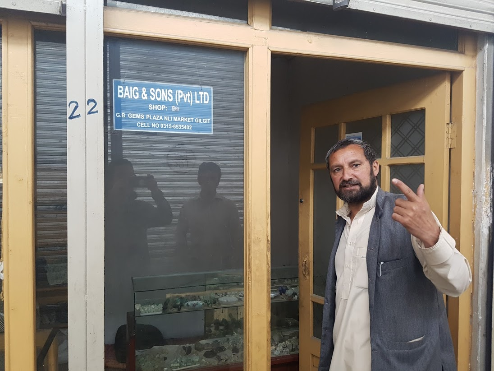

헤어짐과 새로운 만남
2017년 05월 31일
파키스탄
아쉬운 헤어짐.
훈자를 떠나는 날. 블루문 호텔에서 일주일 동안 정이들었던 가지, 페이셜과의 헤어짐은 생각보다 더 큰 아쉬움이 남았다. 훈자가 아쉬운것이 아니라 이 호텔과 사람들이 아쉬웠다. 우리에게 음식을 만들어주고 각종 정보고 알려주고 울터 트래킹 가이드도 해줬던 가지와, 하우스 키핑 일을 하고 있는 17살 페이셜.
이 호텔을 떠나는 것도 무척 아쉬웠다. 이 호텔 테라스에 앉아서 볼 수 있었던 풍경은 지금까지 숙소중 최고의 장면이었다. 매일아침 그 테라스에 앉아서 커피를 마시며 일기를 썼다. 맨날 이렇게 일을 하면 얼마나 좋을까. 여행중 일기를 쓰는 일은 마치 내가 일을 하는 시간과도 같다. 하루 거의 2시간정도를 일기를 쓰는데 투자 했으니. 호텔에 전기가 문제가 되어 전기 고치는것도 구경하고. 이 호텔의 발전기로 부터 시작되는 전기 배선 구조도 파악했었다. 잠깐동안 전기 배선에 대해서 더 좋은 아이디어를 제공할까도 생각했지만 지나치다는 생각이 들어 관두기도 했었다. 가지가 끓는 물을 무료로 끓이게 해줘서 아침마다 무료로 직접 짜이를 끓여먹을 수 있었다. 막판에 뜨거운물 샤워를 하는법을 깨달아서 샤워도 잘 했다. 뜨거운물이 만들어지면 버킷에 모아둔다음 작은 바가지로 샤워를 하면 된다. 네팔&인도&파키스탄 모두 이렇게 온수 샤워를 하면 된다. 그걸 이제야 알았다.

아쉬웠던 가지와의 헤어짐.
페이셜
우리는 가지가 예약해준 택시를 새벽 6시 20분에 타고 Natco 정류장이 있는 Ali Abad에 도착했다. S와 J는 다시 라호르를 거쳐 인도로 들어가고 나는 파키스탄을 더 여행하기로 했다. 그렇게 우리는 거의 10일간의 동행을 마치고 헤어지게 되었다. 그동안 이 친구들과 같이 별일을 다 겪었는데 막상 헤어지려니 정말 아쉬웠다. 여행은 만남과 헤어짐의 끊임없는 반복으로 이루어진다. 그동안 차곡차곡 쌓여왔던 만남들. S와J와의 동행과 각종 우여곡절들, 훈자 마을 ,호텔, 호텔사람들 마을에서 만났던 사람들 멋진 훈자마을의 경치와의 만남, 이 모든것들이오늘 한순간에 헤어짐으로 바뀌었다.
새로운 만남
나는 Gitgit 까지 이동하는 합승지프를 탔다. 마을과 마을의 이동이 생각보다 쉽다. 여행전에는 제일 어려울것이라 생각했던 부분인데 모두 현지인의 도움을 받으면 된다. 도움을 요청하는데 거절하는 사람은 아직 보지 못했던것 같다. 심지어 인도에서도 말이다. 2시간 가량의 이동은 생각보다 좋았다. 20~30시간 동안 버스를 타고 한번에 빨리 가는것보다 이렇게 조금 조금씩 즐기며 천천히 가는것이 더 좋은것 같다. 육체적 피로감도 훨씬 덜 하다. 장기간 이동은 정말 사람을 지치게 한다.
버스 안에서도 모두 스마트폰을 사용하고 있다. 개발도상국가인 파키스탄 오지마을에서도 스마트폰은 모두 사용한다. 전세계에 스마트폰을 사용하지 않는 국가는 이제 거의 없지 않을까? 무엇이 그렇게 사람들로 하여금 핸드폰과 스마트폰을 갖도록 만들었을까 연결에대한 인류의 욕망이지 않을까. 이제 인간의 신체는 육체+스마트폰 으로 새롭게 정의해야할지 모르겠다.
스마트폰 비즈니스는 아직도 그리고 앞으로도 건재할듯 하다. 교체 주기도 비교적 짧으며 전세계 70억명 사람들이 적어도 한대의 기기가 필요하다. 그런 연결을 돕는 소셜미디어 서비스도 마찬가지다. 알랭드보통의 책 불안에서 모든 인간의 목적은 타인에게 사랑 받는것이라고 했다. 사회적 동물인 인간이 그렇게 연결을 원하는 이유가 그것이지 않을까. 기술이 없던 시절에도 우리는 공동체를 통해서 사람들과 연결되어있었다.
파키스탄은 이제 개발이 시작되는 거대한 시장이다. 인구수도 세계 5위다. 전세계 16억명이 존재하는 이슬람인들의 시장은 분명히 매력적인 시장임이 분명하다. 이슬람 문화에대한 이해가 수반되면 수월한 비즈니스가 가능할 것이다. 수 많은 이슬람 국가를 방문할 이번 여행의 목적이 하나 더 생겼다.
길깃에 도착했다. 버스 스탠드는 마을과 너무 멀리 떨어져 있어서 나는 중간에 훈자촉에 내려달라고 했다. 핸드폰이 맛이가서 지도도 안되고 2008년 론니플래닛에 의존하며 숙소를 찾았다. 멀리 baig 게스트 하우스 간판이 보여서 들어갔지만. 외국인 숙박을 위한 퍼미션이 없다고 한다. 그래도 다행이 그 아저씨가 다른 숙소로 데려다 줬다. 론니플래닛에서 봤던 Madina 호텔이다. 가장 저렴한 도미토리 방을 400루피에 체크인 했다. 생각보다 쉽게 숙소를 구해서 다행이었다.
길깃에서 심카드를 구매해야한다. WIFI를 키면 핸드폰이 과열되고 무한 리셋이 되었기 때문에 비용이 조금 들지만 심카드를 이용해서 인터넷을 사용하기로 했다. 방에 대충 짐을 푼뒤 로비로 나왔다. 와이파이가 된다길래 노트북을 들고 나왔다. 몇몇 사람들이 있었다. 요즘은 라마단 (현지인들은 라마잔 이라고 발음한다) 기간이기 때문에 문을 연 식당을 찾기 어렵다. 하필이면 라마단 기간에 파키스탄으로 여행을 와서 음식을 먹는데 약간 어려움이 있다. 나는 일단 점심을 먹고 심카드를 구매해야 하기 때문에 주변에 있던 사람들에게 문을 연 식당이 있는지 물어봤다. 그리고 심카드를 구매할 수 있는지도 물어봤다.
그러다가 거기 앉아있었던 한 사람과 많은 대화를 했는데, 한국에서 7년을 살았다고 했다. 흥미로워서 더욱 대화를 이어나갔다. 이름은 Baig 이고 한국에서 자동차 업계에서 일했었다고 한다. 그리고 한국말을 조금 할 줄 알았다. 그리고 한국의 여행가 유별남이 친구라고 했다. 나도 팟캐스트에서 몇번 들었던 사람이라 무척 신기했다. 대화가 더 지속되면서 더욱 놀랄만한 사실이 발견되었다. 며칠전에 길깃에 파키스탄 남자와 결혼한 한국인이 1명 있다고 들었는데 이사람이 바로 그 남편이었다는 사실이다! 세상이 이렇게 좁다니.. 진짜 신기했다.
한참을 대화하고 일단 나는 심카드를 구할 수 있는지 물어봤는데 베이그가 도와준다고 해서 밖으로 나왔다. 파키스탄에서는 필요한것이 있고 어려움이 있으면 현지인에게 도움을 요청하면 모든게 해결된다. 내가 파키스탄 사람들을 사랑하는 이유다. 베이그가 또 다른 사람을 소개시켜 줬다. 슈퍼를 운영하는 아리프다. 아리프가 심카드를 구매하는것을 도와주기로 했다. 아리프와 함께 심카드 가게로 갔다.
문제가 하나 생겼는데 1~2주 머무는 외국인은 현지 심카드를 구매하기 무척 어렵다는 사실이다. 그런데 아리프가 본인 이름으로 심카드를 구매할 수 있게 도와주었다! 감동 ㅜ 거기서 심카드 가게 주인으로 보이는 사람이랑도 대화를 많이 했다. 무엇이든지 필요한것이 있으면 찾아오라고 한다. 도움을 준다고 한다. 이게 파키스탄이다. 무한한 도움을 받을 수 있는 곳이다. 결국 2GB심카드를 구매했고 그 자리에서 바로 동작이 되었다. 인도에서는 동작시키는데 1일이 소요되었는데 여기선 심카드를 구매하고 바로 인터넷을 사용할 수 있다! 파키스탄 짱.
그 뒤 아리프가 라마단 기간에 비밀스럽게 문을 연 식당도 안내해 주었다.ㅜ 드디어 밥을 먹을 수 있다ㅜ 거기서 치킨 라이스를 먹었는데 맛있었다. 식사를 마치고 돼지꼬리 히터를 파는지 조금 돌아다녀 봤는데 모두 큰것밖에 없어서 사지는 못했다.

세계 좁은걸 느끼게 해줬던 베이그
아리프(파란 셔츠)는 본인 가게 셔터도 닫고 한시간을 넘게 나를 데리고 다니면서 도움을 주었다.
다시 가게로 돌아왔다. 감사 인사를 하기 위해서다. 갑자기 멀리서 쿠란을 읇는 듯한 소리가 들려 거기 있던 사람들에게 물어봤는데 모스크에서 나오는 소리라고 한다. 나는 흥미로워서 모스크에 방문하면 좋을 것같았다. 모스크 위치를 물어봤는데 거기있던 한 친구가 같이 가준다고 했다. 나는 이런 뜻밖의 인연에 고무되었다. 현지 무슬림 사람과 같이 모스크에 방문하다니. 이름은 와지드. 내가 이슬람 문화에 많은 관심을 가지고 있어서 그런지 내게 많은 것들을 알려주었다.
모스크에 도착했을때 예배가 시작되기 직전 이었다. 무슬림들은 하루에 5번 기도를 해야한다. 당시는 점심 직후의 시간이었는데 사람들이 점점 모여들고 있었다. 그러다가 얼떨결에 무슬림 사람들이 기도하고 있는 한복판에 있게되었다. 그 순간은 무척 평화로운 순간이었다. 내 인생 첫 무슬림의 기도 장면을 본 순간이었다.
기도하는 무슬림들
모스크 구경을 마치고 나는 내일 칠라스로 가는 버스 티켓을 구매하려고 했다. 티켓은 이지역에서 멀리 떨어진 제네럴 버스스탠드로 가야하는데 걸어서는 갈 수없고 자동차를 이용해야 한다. 그러나 역시나 와지드가 티켓구매를 도와줬다. 갑자기 어떤 차가 왔는데 와지드의 친척이라고 한다. 그래서 그 차를 타고 편하게 버스스탠드에 갈 수 있었다. 티켓을 예약할 필요없고 내일 아침 10시 출발하는 버스를 타기로 했다.

나를 데리고 모스크를 돌아다니고 많은 도움을 주었던 와지드.
그 뒤 길을 돌아다니는데 수많은 사람들이 도움을 주었다. 망고를 사러 가기위해 길을 물었는데 가게까지 데려다 주었던 아저씨. 길에서 어떤 경찰아저씨가 외국인을 만나서 기쁘다며 도움이 필요하면 언제든지 말하라고 했던일. 등등. 그냥 거쳐가기로 했던 길깃 마을에서 정말 많은 일들이 있었고 수많은 현지인들을 만났다.